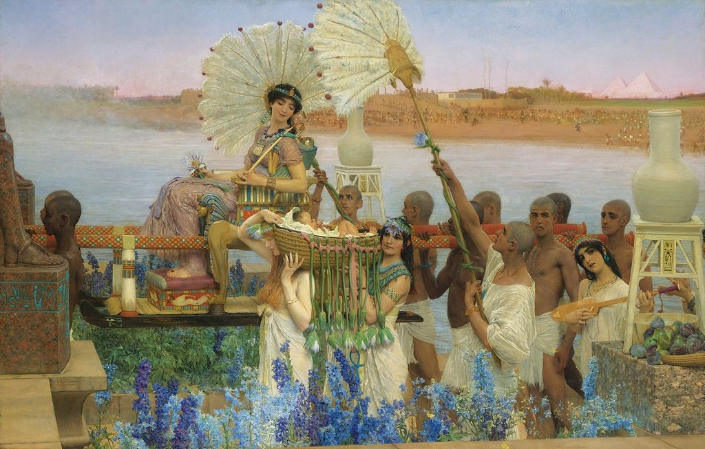

<head>
<meta charset="UTF-8" />
<meta name="keywords" content="drawing, painting" />
<meta name="description" content="drawings by Sunjy" />
<title>Sunjy</title>
<link rel="shortcut icon" type="image/x-icon" href="../../mImages/mCommon/favicon.ico" media="screen" />
<link rel="stylesheet" type="text/css" href="../../mCsses/mCommon/mCssA.css" />
<link rel="stylesheet" type="text/css" href="../../mCsses/mCommon/mCssB.css" />
<link rel="stylesheet" type="text/css" href="../../mCsses/mCommon/mCssC.css" />
<link rel="stylesheet" type="text/css" href="../../mCsses/mCommon/mCssD.css" />
<link rel="stylesheet" type="text/css" href="../../mCsses/mContent/mCssA.css" />
<link rel="stylesheet" type="text/css" href="../../mCsses/mContent/mCssB.css" />
<link rel="stylesheet" type="text/css" href="../../mCsses/mContent/mCssC.css" />
<link rel="stylesheet" type="text/css" href="../../mCsses/mContent/mCssD.css" />
</head>
<script type="text/javascript" src="../../mScripts/mContent/mContentAA.js" /></script>
<script type="text/javascript" src="../../mScripts/mContent/mContentAB.js" /></script>
<script type="text/javascript" src="../../mScripts/mContent/mContentAC.js" /></script>
<script type="text/javascript" src="../../mScripts/mContent/mContentAD.js" /></script>
<script type="text/javascript"></script> 
<script type="text/javascript">
document.write('<div class="mImgAbsolute"></div>');
/*
document.write('<p class="mFontSizeBColor" />From a white paper...</p>');
document.write('<table class="center"><tr><td>');
document.write('');
document.write('</td></tr></table>');
*/
</script>


<script type="text/javascript">
document.write('<p class="mFontSizeBColor" />The Finding of Moses</p>');
document.write('<p class="mFontSizeSColor" />The Finding of Moses by Lawrence Alma-Tadema was one of his last major works before his death in 1912. The painting represented the final phase of a revival in the 19th century by Orientalist artists. These artists were keen to add authentic archaeological decor to their depictions. Lawrence Alma-Tadema’s art quickly fell out of favor, however after appreciation of Victorian painting was renewed, Alma-Tadema’s reputation was rediscovered as was this painting.<br><br>The work is a Biblical scene based on the Book of Exodus, in which Pharaoh’s daughter comes to wash in the River Nile, and finds the infant Moses abandoned in a basket in the reeds. The painting depicts the scene after the infant was discovered. It shows a procession on the way back to the Princess’s home in Memphis, the capital of the Old Kingdom of Egypt.<br><br>Male attendants in loincloths carry the Pharaoh’s daughter in an elaborately decorated chair. She wears a pink diaphanous gown and jewelry and holds a flail in her left hand, a symbol of royalty. Her feet rest on a footstool decorated with bound captives, another symbol of royalty, which also references the enslaved Israelites. The plinth and feet of a red granite statue are just visible to the front left. It is similar to a statue of Seti II in the British Museum.  Hieroglyphic cartouches identify her as the daughter of Ramesses II.<br><br>Attendants wave ostrich feather fans, while two female attendants carry Moses in his cradle alongside. The bassinet has been decorated with lotus flowers, tied on with a pink ribbon. Another female attendant plays a stringed instrument. In the background, on the other bank of the river, teams of slaves can be seen laboring under their dark-skinned overseers.<br><br>Finding of Moses in Art<br><br>“The Finding of Moses” story has become a popular subject in art, especially from the Renaissance onwards. The earliest surviving depiction in art is a fresco in the Dura-Europos synagogue, datable to around 244 AD. This earliest motif of a “naked princess” bathing in the river has been reused in much later art. A different tradition, beginning in the Renaissance, gave great more attention to the lavish Egyptian costumes.<br><br>Moses is a central figure in Jewish tradition and of significance in Christian thought. The subject also represented a case of a foundling or abandoned child, a significant social issue in modern times. Paintings of the biblical story narrative have had many various titles such as “Moses in the Bullrushes,” and “Moses Saved from the Waters.”<br></p>');
document.write('<table class="center" /><tr><td>');
document.write('<br>The work is a Biblical scene based on the Book of Exodus, in which Pharaoh’s daughter comes to wash in the River Nile, and finds the infant Moses abandoned in a basket in the reeds. The painting depicts the scene after the infant was discovered. It shows a procession on the way back to the Princess’s home in Memphis, the capital of the Old Kingdom of Egypt.<br><br>Male attendants in loincloths carry the Pharaoh’s daughter in an elaborately decorated chair. She wears a pink diaphanous gown and jewelry and holds a flail in her left hand, a symbol of royalty. Her feet rest on a footstool decorated with bound captives, another symbol of royalty, which also references the enslaved Israelites. The plinth and feet of a red granite statue are just visible to the front left. It is similar to a statue of Seti II in the British Museum.  Hieroglyphic cartouches identify her as the daughter of Ramesses II.<br><br>Attendants wave ostrich feather fans, while two female attendants carry Moses in his cradle alongside. The bassinet has been decorated with lotus flowers, tied on with a pink ribbon. Another female attendant plays a stringed instrument. In the background, on the other bank of the river, teams of slaves can be seen laboring under their dark-skinned overseers.<br><br>Finding of Moses in Art<br><br>“The Finding of Moses” story has become a popular subject in art, especially from the Renaissance onwards. The earliest surviving depiction in art is a fresco in the Dura-Europos synagogue, datable to around 244 AD. This earliest motif of a “naked princess” bathing in the river has been reused in much later art. A different tradition, beginning in the Renaissance, gave great more attention to the lavish Egyptian costumes.<br><br>Moses is a central figure in Jewish tradition and of significance in Christian thought. The subject also represented a case of a foundling or abandoned child, a significant social issue in modern times. Paintings of the biblical story narrative have had many various titles such as “Moses in the Bullrushes,” and “Moses Saved from the Waters.”<br>" />');
document.write('</td></tr></table>');
</script>


